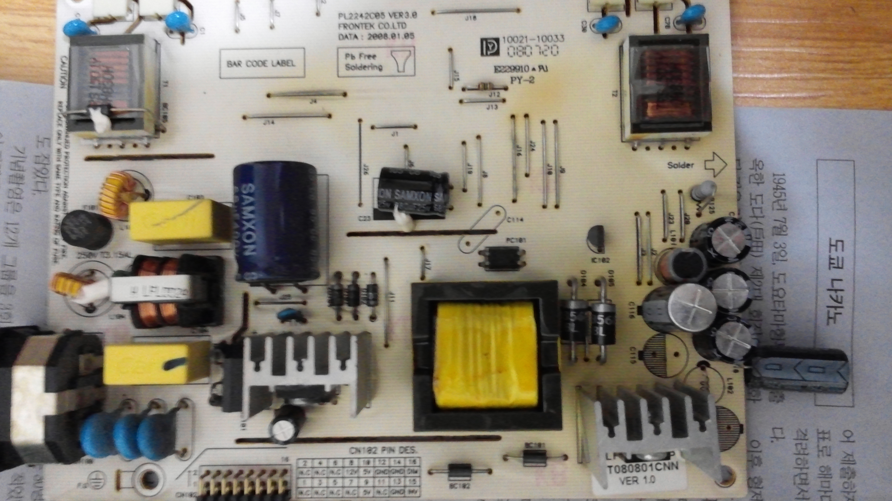
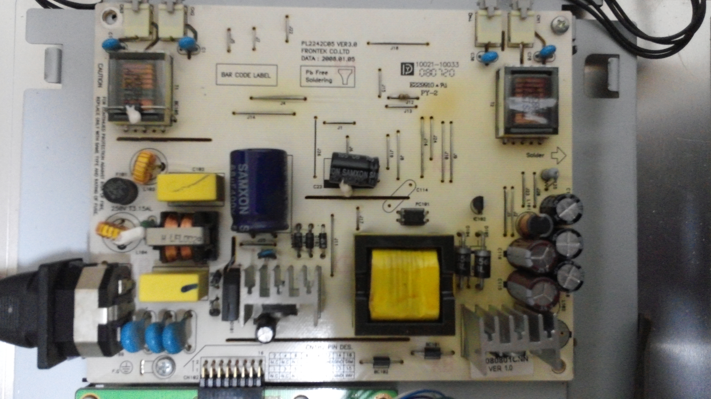

모니터 고장 관련글
모니터 고장증상과 직접 수리 방법(백라이트/인버터/립스보드 교체하기)
http://cooltime.tistory.com/451내 모니터
모니터명 : BTC zeus5000 223mv
전조
고장 나기 전에 화면이 다소 어두웠다. 이상하다 싶은 생각에 밝기를 올렸더니 다시 어두운 밝기로 되돌아갔다.
'공장초기화를 하면 괜찮아지지 않을까?'란 생각에 공장 초기화를 한 순간 내 모니터는 영원히 빛을 잃어버렸다.
증상
화면은 나오지 않고 전원이 켜지고 꺼지는 것을 반복한다.
원인짐작
- 캐패시터 고장. 모니터를 분해해보니 립스보드ㅡ또는 IP보드라고도 부른다ㅡ의 캐패시터가 부풀어 있었다. 으음 전압에 이상이 생겼겠구나란 생각이 들었다. 그래서 현재 캐패시터를 주문했다.
- 백라이트로 가는 전압을 주는 인버터가 고장. 그런데 립스보드에 인버터가 붙어 있어서 인버터만 따로 사진 못한다. 립스보드 전체만 사야하는데 배송비 포함해서 2만원 정도 한다.
http://itempage3.auction.co.kr/DetailView.aspx?ItemNo=A832557962&frm3=V2 - 백라이트 고장. 전조에 밝기가 약했었던 것을 생각해본다면 백라이트 자체에 문제가 있었을 수도...
정리
캐패시터(콘덴서) > 립스보드안 인버터 > 백라이트

사진1 - 콘덴서 부풀어 오름

사진2 - 콘덴서 교체 후
결과
콘덴서 문제였다. 부풀어 오른 콘덴서를 납땜해주고 전원 연결해서 화면을 확인해보니 정상 작동하였다. 음하하하하하하하하
참고로 콘덴서는 한 쪽 라인에서 하나라도 부풀어 오를시 전부 다 교체 해야 한다고 한다.
내 증상에서는 다행히도(?) 두 개가 다 부풀어 올라 두개 모두 교체해주었다. 그럼 ㅅㄱ
추신
- 모니터를 버린다는 생각하에 수리에 임하고 있습니다.
- 도전하면서 그냥 3만원 주고 수리 맡길 걸 이라는 생각이 제 뇌하수체를 자극하고 있습니다.
시간적 비용을 고려한다면 몇만원을 주고 모니터 수리 업체에 맡기실 것을 강추합니다. - 모니터를 뜯다보니 BTC 회사만 그런지 모르겠으나 상당히 분해하기 힘들게 해놨습니다. 아..
앞으로의 모니터들은 객체 지향 설계좀 잘했으면 좋겠습니다. 뗐다 부쳤다 하기 쉽게! - 모니터 전원 램프가 대기모드에서 시끄러운 관계로 절단해 버렸습니다. 교체할까 했지만 어차피 램프 없어도 잘 작동하니 절단을 감행했습니다.